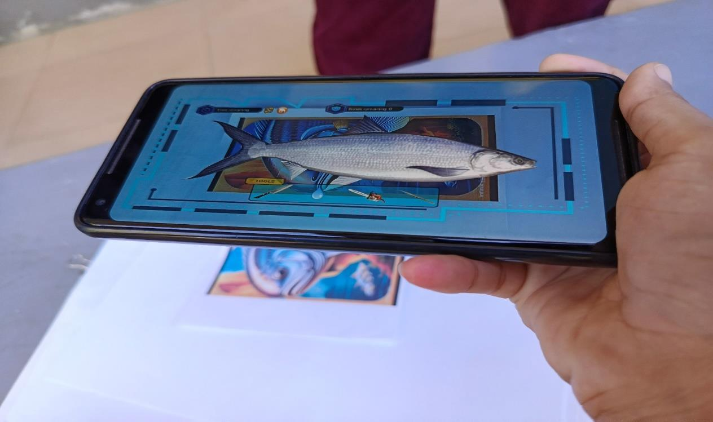
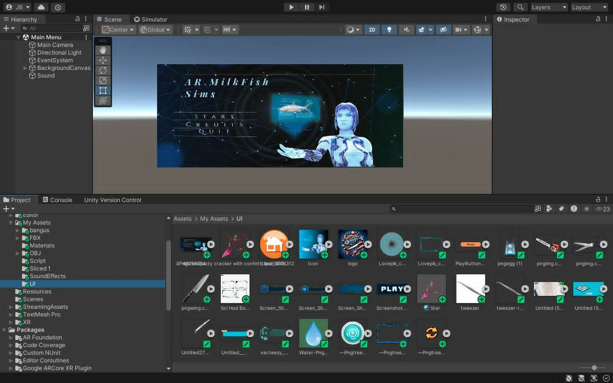
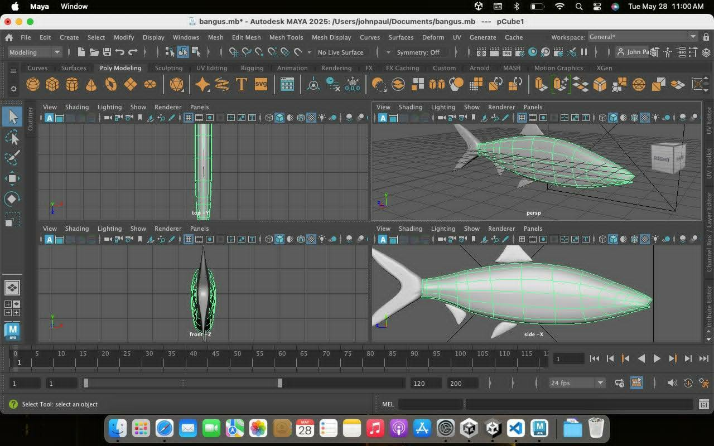

Capstone Project · Augmented Reality Training
ARMilkfishSIMS – Augmented Reality Training System for Milkfish Deboning
ARMilkfishSIMS is my capstone project: an augmented reality training system designed to help learners understand the proper process of milkfish deboning through interactive simulation. The project presents a traditional hands-on skill in a guided digital format, making the learning experience more visual, structured, and engaging.
The system demonstrates how AR can support skills training by showing procedure guidance, interactive learning flow, and task-based simulation instead of relying only on static instructions.
GoalCreate a modern AR learning tool that teaches milkfish deboning in a clearer and more interactive way.
Problem solvedTraditional deboning instruction can be hard to visualize without repeated hands-on demonstration.
My roleDesigned and developed the training concept, AR interaction flow, simulation logic, and project presentation.
Portfolio valueShows experience with immersive technology, educational systems, Unity development, and user-focused problem solving.